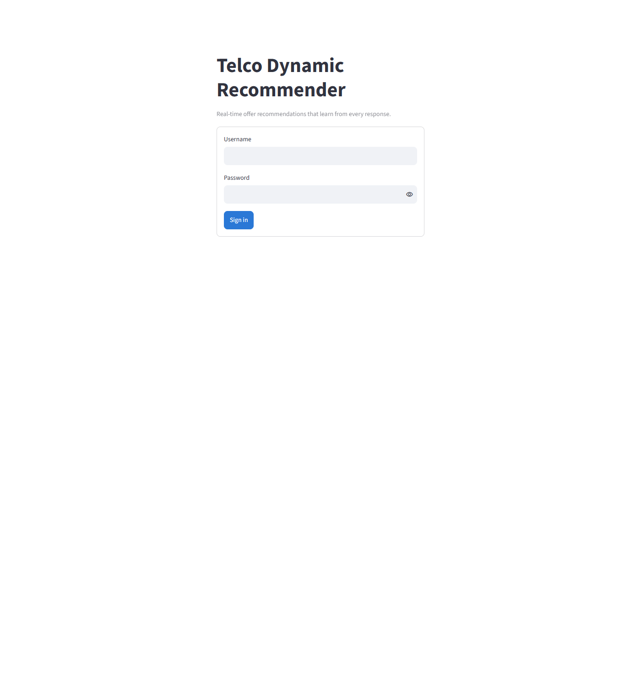
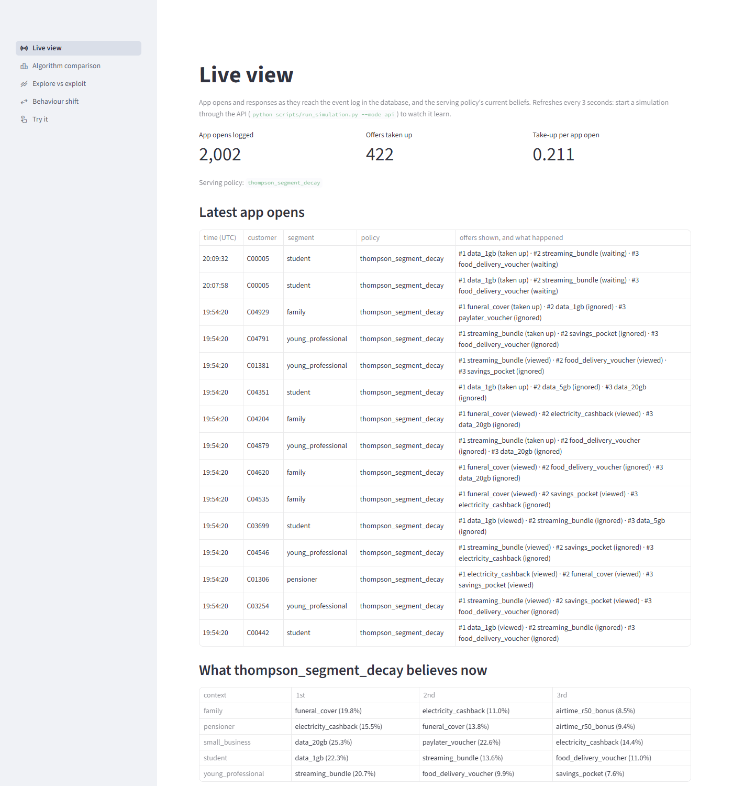
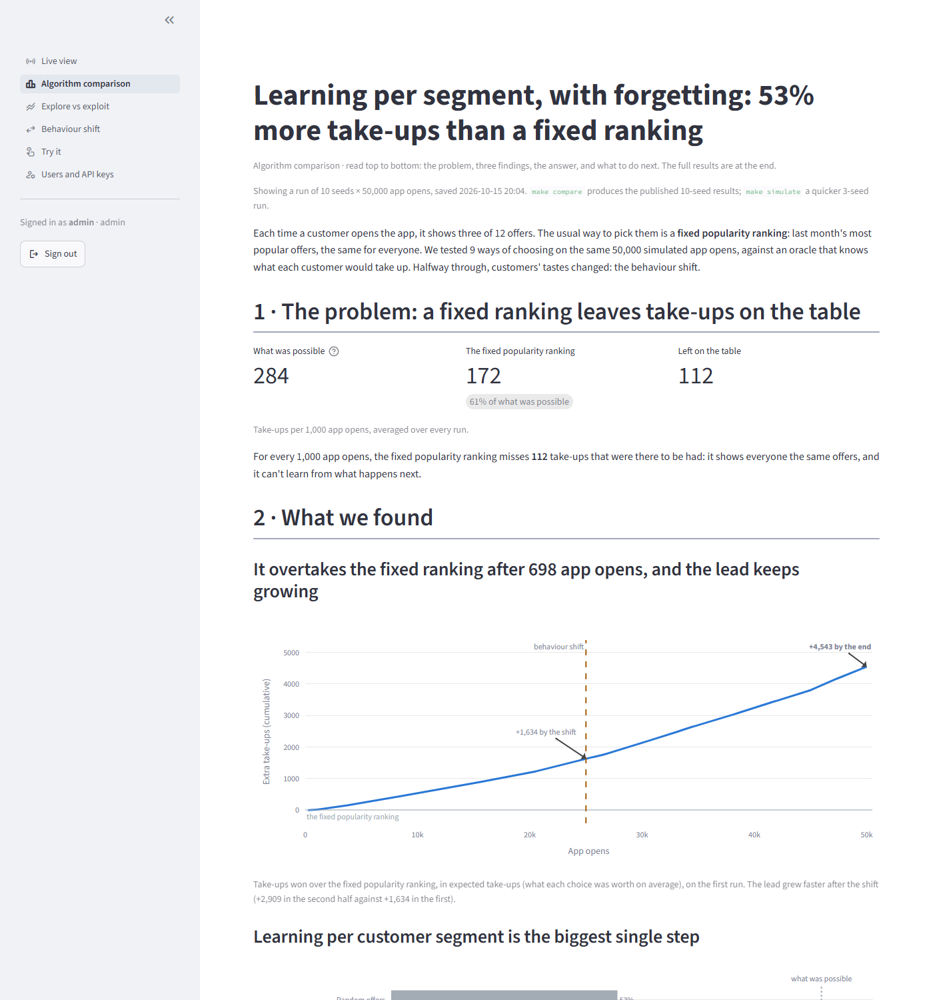
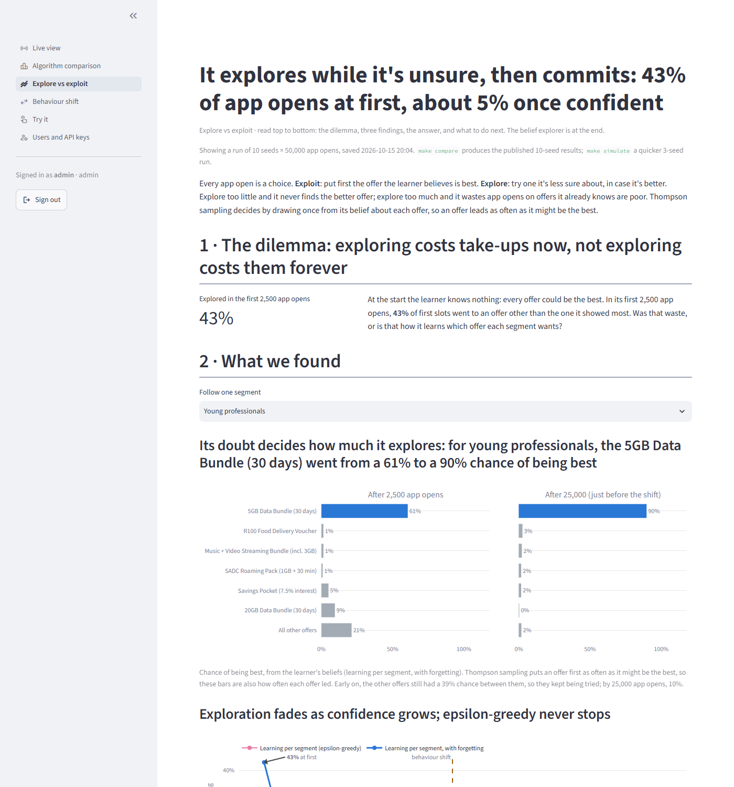
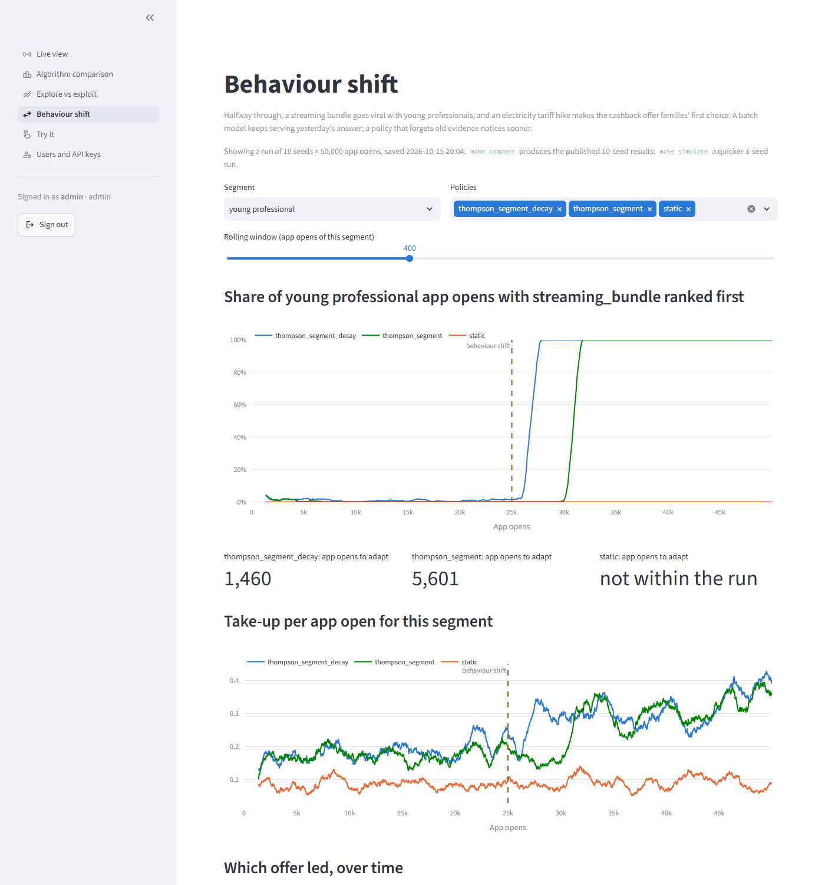
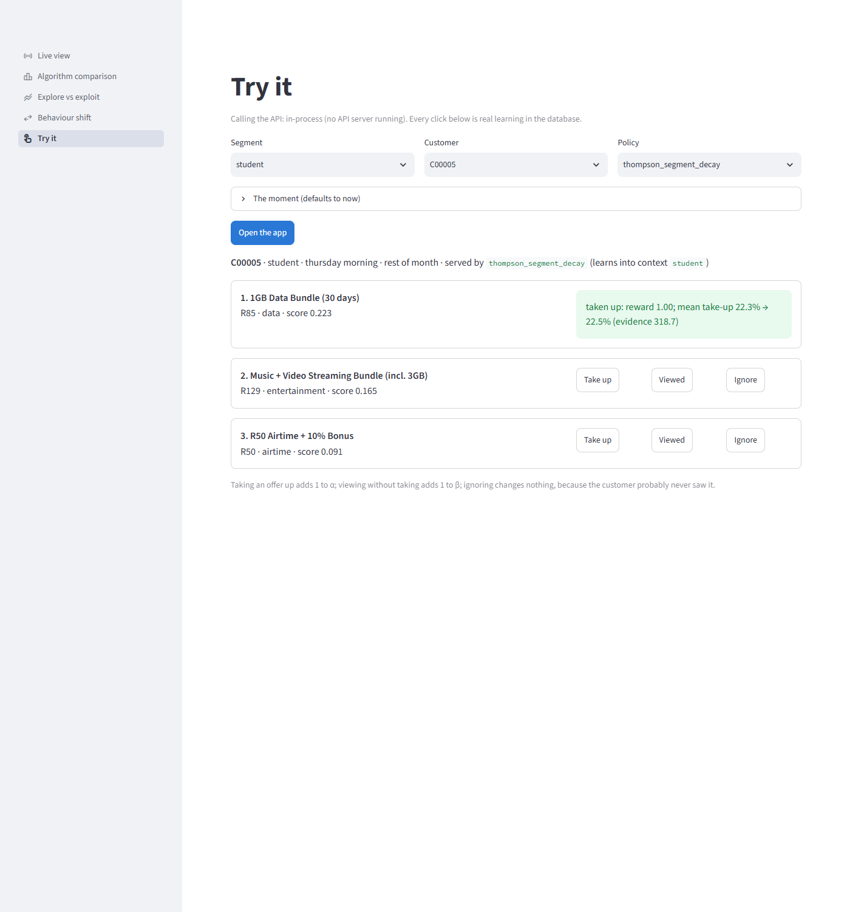
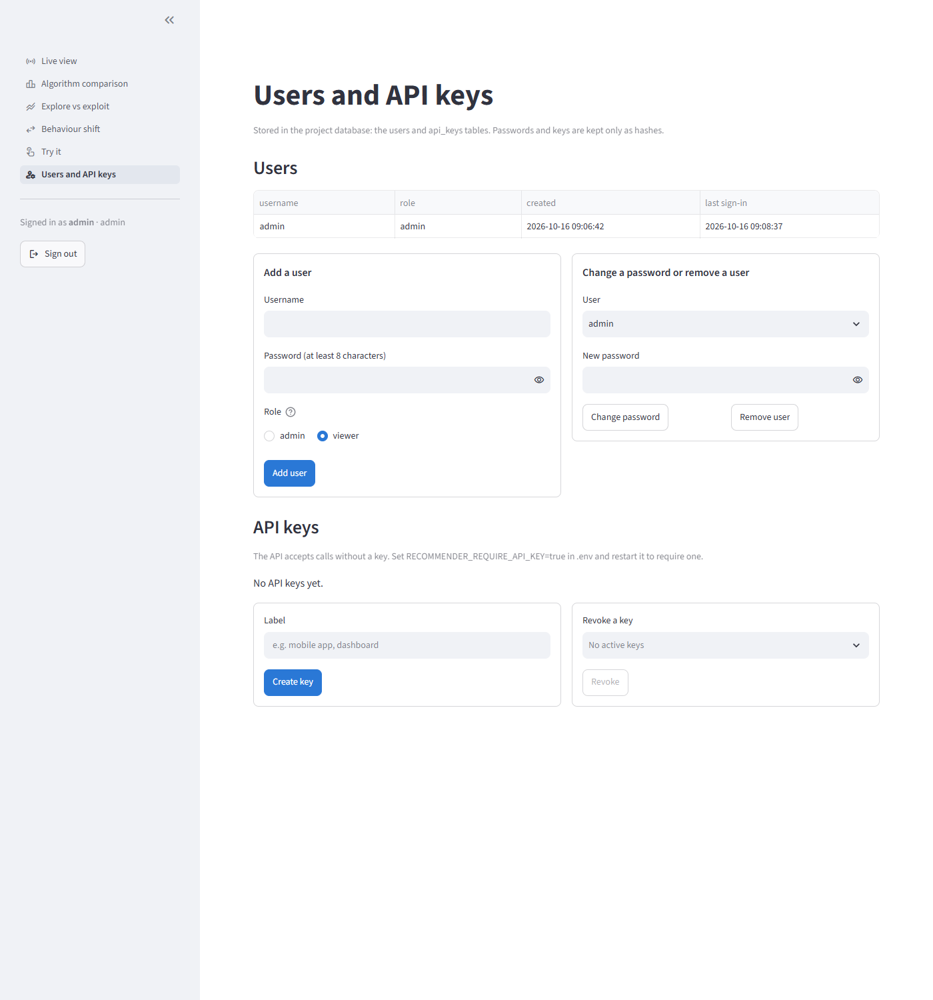

Dashboard · Phase 5
Watching the recommender learn
Everyone signs in first. Then six Streamlit pages: the live event log; three pages that tell the results as stories (which policy wins, how it explores, how it adapts); a page where you play the customer and watch the model update; and, for admins, users and API keys.
Run it
Builtpython manage.py migrate # once: tables and customers
python manage.py simulate # results for the story pages, 1,000 app opens
python manage.py runserver # the API and the dashboard: http://localhost:8501Or, with make: make install, make simulate, make dashboard.
That is the brief's definition of done, verified on a fresh clone with no .env: everything falls back to a local SQLite file and no API server is needed. make simulate takes about four minutes there. Run make compare instead for the published 10-seed results; every results page says which run it is showing.
Map of the app
flowchart LR
IN["Sign in<br/>(first visit: create the admin)"] --> ROLE{"Role"}
ROLE -- "viewer" --> V
ROLE -- "admin" --> V
ROLE -- "admin" --> AD
subgraph V["Every signed-in user"]
L["Live view<br/>what is happening now"]
C["Algorithm comparison<br/>which policy wins, and by how much"]
E["Explore vs exploit<br/>how it decides what to try"]
S["Behaviour shift<br/>what happens when customers change"]
end
subgraph AD["Admins also"]
T["Try it<br/>be the customer; changes the model"]
U["Users and API keys<br/>who can sign in and call the API"]
end
L -. "reads" .-> DB[("Event log and<br/>options store")]
C -. "reads" .-> RES[("results/")]
E -. "reads" .-> RES
S -. "reads" .-> RES
T -. "calls" .-> API["API"]
API -.-> DB
U -. "reads, writes" .-> ACC[("users, api_keys")]
Page by page
| Page | Who | The question it answers | What it has, top to bottom | You can |
|---|---|---|---|---|
| Sign in | Everyone | Who are you? | Username and password. On an empty database: create the admin account instead. | Sign in; after five failures, wait 30 seconds |
| Live view | Everyone | What is the recommender doing right now? | App opens logged, offers taken up, take-up per app open; the serving policy; the latest 15 app opens with every offer shown and what happened to it; the serving policy's top three offers per segment, with their expected take-up. Refreshes every 3 seconds. | Watch a simulation arrive |
| Algorithm comparison | Everyone | Which way of choosing offers wins, and by how much? | Headline finding; the setting; 1 · the problem (what was possible, what the fixed ranking gets, what it leaves); 2 · three findings with one chart each; 3 · the answer; 4 · what to do next; then the full table, curves and convergence. | Pick the policies on the detailed curves |
| Explore vs exploit | Everyone | How does it decide when to try something new? | Headline; the dilemma (how much it explored at first); 2 · chance of being best early and before the shift, exploration over time against epsilon-greedy, the evidence behind the beliefs with and without forgetting; 3 · the answer; 4 · next steps; then the belief explorer. | Follow a segment; explore any policy, context and point in the run |
| Behaviour shift | Everyone | What happens when customers change? | Headline; what changed; the old and new favourite for a segment; 2 · when each policy switched, how take-ups followed, what forgetting costs and saves; 3 · the answer; 4 · next steps; then rolling charts and which offer led over time. | Follow young professionals or families; pick policies and the rolling window |
| Try it | Admins | What would this customer see, and how does one response change the model? | Segment, customer and policy; the moment (day, time of day, payday week); Open the app; three ranked offers with their scores; for each, take up, viewed or ignore; the reward and the belief before and after. | Open the app as any customer and respond; every click is real learning |
| Users and API keys | Admins | Who can sign in, and which systems can call the API? | Users with role, created and last sign-in; add a user; change a password or remove a user; whether the API requires keys; the keys (first characters only); create a key, shown once; revoke a key. | Manage accounts and keys |
Signing in
Accounts live in the users table of the project database, with passwords stored only as salted hashes. On an empty database the first screen creates the admin account instead (or run python manage.py createsuperuser). Viewers see the live view and the results; admins also get Try it, which changes the model, and Users and API keys. A sign-in lasts for the browser tab.

Live view
App opens and their outcomes as they reach the event log, refreshing every 3 seconds, and the serving policy's current top three offers per context. Start a simulation through the API (python scripts/run_simulation.py --mode api) and watch it fill.

Algorithm comparison
Told as a data story, following Brent Dykes' storytelling arc, so the message gets through to someone who reads it once:
- A headline that is the finding ("53% more take-ups than a fixed ranking"), not the topic.
- Setting and hook: what was possible (284 take-ups per 1,000 app opens), what the fixed popularity ranking gets (172), and what it leaves on the table.
- Three rising insights, one chart and one message each: the learner overtakes the fixed ranking after about 700 app opens and keeps pulling away; learning per customer segment is the biggest single step; when customers changed, only the learner followed. Colour goes only to what the message is about; everything else is grey, and the key points are annotated.
- The aha moment: "91 more take-ups for every 1,000 app opens", with how many runs agree and the honest note that the closest variants tie.
- What to do next: serve the policy, decide between take-ups and revenue, prove it on real traffic with a holdout, keep watching.
Plain names replace policy ids for a business reader. Every number and claim is computed from the run on disk by recommender.evaluation.story, so a 3-seed run says "of 3 runs" and never borrows the published numbers. The full table, curves for any set of policies and convergence sit in an expander at the end.

Explore vs exploit
The same storytelling arc. Headline: it explores while it's unsure, then commits (43% of app opens at first, about 5% once confident). The hook is the dilemma: exploring costs take-ups now, not exploring costs them forever. Three findings follow:
- Its doubt decides how much it explores. The chance each offer is the best, after 2,500 app opens and just before the shift, for a segment you pick. Thompson sampling shows an offer first exactly that often, so the bars are also how much it explores.
- Exploration fades as confidence grows; epsilon-greedy never stops. The share of app opens spent away from each segment's usual first offer, per 2,500 app opens.
- Forgetting keeps just enough doubt to notice a change. The responses behind the beliefs level off near 5,000 with forgetting and pile up past 25,000 without.
Then the answer (Thompson against epsilon-greedy on the same segments, counted by run) and next steps. The Beta density curves, the table and how the beliefs moved, for any policy, context and point in the run, sit in an expander. The numbers come from recommender.evaluation.exploration.

Behaviour shift
The same arc. Headline: when customers changed, the learner followed, losing 87% fewer take-ups than the fixed ranking after the change. The hook is the change itself for a segment you pick (young professionals' favourite went from the 5GB data bundle to the streaming bundle) and how often the fixed ranking showed the new favourite first: never. Three findings follow:
- The learner switched within 1,460 app opens; without forgetting, 5,601. For families: 7,980, and without forgetting not within the run.
- Take-ups followed. Young professionals went from 177 to 309 take-ups per 1,000 app opens with the learner; the fixed ranking stayed at 85–86.
- Forgetting is why: it cost 93 take-ups before the change and saved 130 after, counted by run.
Then the answer and next steps. The rolling charts for any set of policies and window, and which offer led over time, sit in an expander. The numbers come from recommender.evaluation.adaptation; the favourites before and after come from the simulator's ground truth.

Try it
Pick a segment, a customer, a policy and optionally the moment; open the app; then take up, view or ignore each offer and see the belief for that offer update. It calls the API server if one is running, otherwise the same FastAPI app inside the dashboard, so the code path is identical. Every click is real learning in the database.
Admins only, since every click changes the model.

Users and API keys
Admins only. Add users as viewers or admins, change passwords, remove users, and create or revoke API keys. A new key is shown once and stored only as a hash. Whether the API requires keys is one setting in .env: RECOMMENDER_REQUIRE_API_KEY.

Where the data comes from
| Page | Reads | Up to date |
|---|---|---|
| Live view | Event log and options store in the database | Every 3 seconds |
| Algorithm comparison | results/comparison.csv, comparison_by_seed.csv, comparison_rounds.parquet, convergence.csv | When a new run is saved |
| Explore vs exploit | results/comparison_snapshots.parquet, comparison_rounds.parquet, comparison.csv, comparison_by_seed.csv | When a new run is saved |
| Behaviour shift | results/comparison_rounds.parquet, convergence.csv, comparison.csv, comparison_by_seed.csv | When a new run is saved |
| Try it | The API | Live |
| Users and API keys | The users and api_keys tables | Live |
Results files are cached by modification time, so a new make compare or make simulate shows up without restarting the dashboard. Three environment variables redirect everything, which is how the tests isolate it: RECOMMENDER_DATABASE_URL, RECOMMENDER_RESULTS and RECOMMENDER_API_URL.
How it is tested
- Every page renders, using Streamlit's own test harness, against a throwaway SQLite database (customers plus app opens sent through the API) and a throwaway results folder written exactly as
make comparewrites it. The real database and results are never touched. - Content is checked: the live view's counts, every configured policy in the comparison, and the "run make simulate" message when there are no results.
- Try it is clicked through: open the app, take up the first offer, and assert that the reward and the updated belief are shown.
- Screenshots on this page come from
make screenshots, which drives the installed Chrome or Edge with Playwright.
Dashboard code lives in dashboard/; its theme in .streamlit/config.toml.